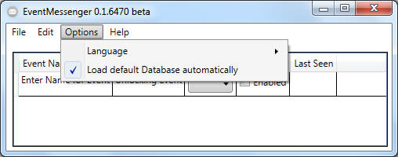
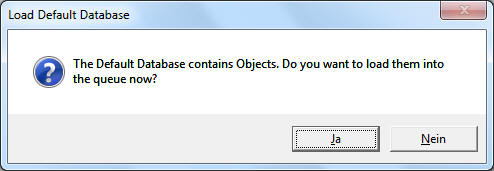

Main Window - Options

"Language":
Please select your preferred default language.
"Load default Database automatically":
After
saving you current setup as default project
. You could enable this feature to load this defaut project database every time the software is started.
